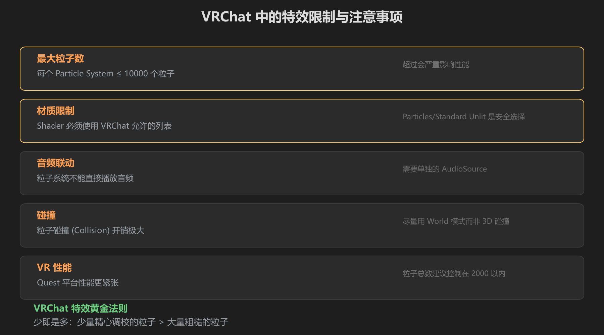
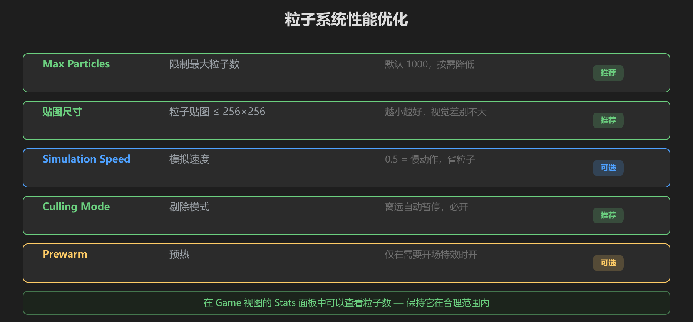

第 4 篇：VRChat 特效实践 — 限制与性能优化
在普通 Unity 项目里做特效和在 VRChat 里做特效是两回事。VRChat 有严格的性能限制，而且特效要在 Quest 和 PC 两种平台上都能跑。这篇专门讲 VRChat 的特效注意事项。
1. VRChat 中的特效限制

图：VRChat 中的五项核心限制
| 限制项 | 具体数值 | 说明 |
|---|---|---|
| 最大粒子数 | 每个系统 ≤ 10000 | 超过会严重掉帧，Quest 建议 ≤ 2000 |
| Shader 限制 | 只能用 VRChat 白名单 Shader | Particles/Standard Unlit 安全 |
| 音频 | 不能直接在粒子系统上播音频 | 需要单独的 AudioSource |
| 碰撞 | 粒子碰撞开销极大 | 尽量用 World 模式而非 3D 碰撞 |
| Quest 平台 | 性能更紧张 | 粒子总数控制在 2000 以内 |
2. 性能优化的黄金法则

图：五项关键优化设置和推荐值
2.1 限制粒子数量
在 Main 模块中有一个 Max Particles 参数，默认是 1000。这是硬上限——粒子系统里的粒子数量永远不会超过这个值。在 VRChat 中建议设为 500 或更低。
2.2 减小贴图尺寸
粒子贴图不需要高分辨率。256×256 完全够用，128×128 也可以。在 Project 窗口选中贴图，Inspector 里把 Max Size 调小即可。
2.3 开启剔除 (Culling)
粒子系统有一个 Culling Mode 设置（在 Main 模块底部附近）：
- Automatic：粒子离开屏幕后自动暂停（推荐）
- Pause：粒子离开屏幕后暂停但保留状态
- Always Simulate：始终运行（不推荐，浪费性能）
2.4 使用 Simulation Speed
Simulation Speed 控制粒子系统的模拟速度。设为 0.5 就是慢动作，同样的效果可以用更少的粒子实现。这是一个非常有用的性能优化技巧。
2.5 Prewarm 要慎用
Prewarm（预热）会让粒子系统在场景加载时预先模拟一段时间，让特效「一开始就是满的」。这很方便，但会增加加载时间。仅在开场特效中使用。
黄金法则：少即是多。少量精心调校的粒子，效果远好于大量粗糙的粒子。调好颜色渐变、大小曲线和材质，比堆粒子数重要得多。
3. VRChat 中特效的摆放
VRChat 的世界空间特效可以放在任何位置。常见做法：
- 世界装饰：直接放在场景中作为静态装饰（篝火、瀑布雾气）
- 跟随物体：把粒子系统作为某个 GameObject 的子物体，它就会跟随移动
- 交互触发：通过 UdonSharp 脚本控制粒子系统的 Play/Stop
4. 用脚本控制粒子系统
在 VRChat 中，你通常需要通过 UdonSharp 来控制粒子系统。基本用法：
using UdonSharp;
using UnityEngine;
public class PortalController : UdonSharpBehaviour
{
public ParticleSystem portalEffect;
// 播放特效
public void PlayPortal()
{
portalEffect.Play();
}
// 停止特效
public void StopPortal()
{
portalEffect.Stop();
}
// 切换特效开关
public void TogglePortal()
{
if (portalEffect.isPlaying)
portalEffect.Stop();
else
portalEffect.Play();
}
}把这个脚本挂在一个 GameObject 上，把粒子系统拖到 portalEffect 字段，就可以通过 Udon 事件来控制特效了。
5. 常见的 VRChat 特效性能陷阱
| 陷阱 | 为什么不好 | 怎么避免 |
|---|---|---|
| 太多粒子系统同时运行 | CPU 计算不过来 | 用 Culling Mode = Automatic |
| 粒子贴图太大 | 显存占用高 | 所有粒子贴图 ≤ 256×256 |
| Sub Emitter 嵌套太深 | 粒子数指数增长 | 最多嵌套一层 |
| Collision 模块开启 | 物理计算极耗 CPU | 除非必要，不开启 Collision |
| 多个系统使用不同材质 | 增加 Draw Call | 尽量共享同一个材质球 |
学前检查清单
- 知道 VRChat 中粒子总数建议控制在 2000 以内
- 知道 Culling Mode 应该设为 Automatic
- 知道粒子贴图不需要超过 256×256
- 知道如何用 UdonSharp 脚本控制粒子系统的 Play/Stop
- 知道 Collision 模块在 VRChat 中应该避免使用